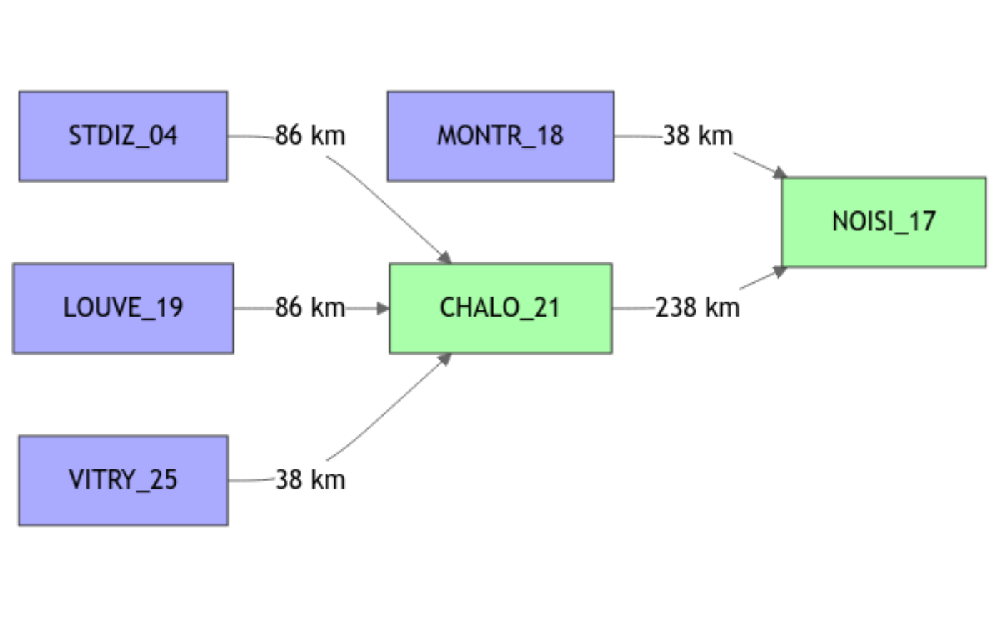
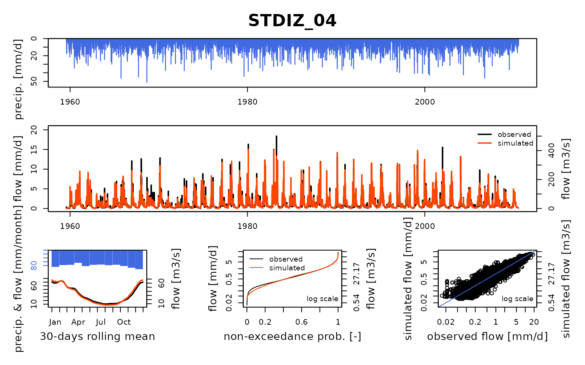
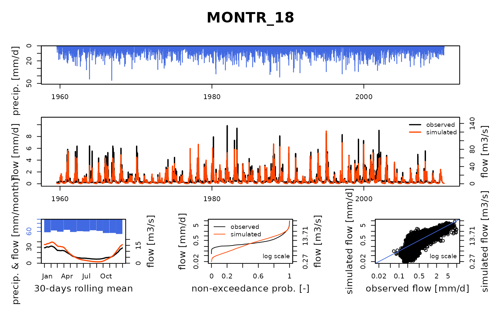
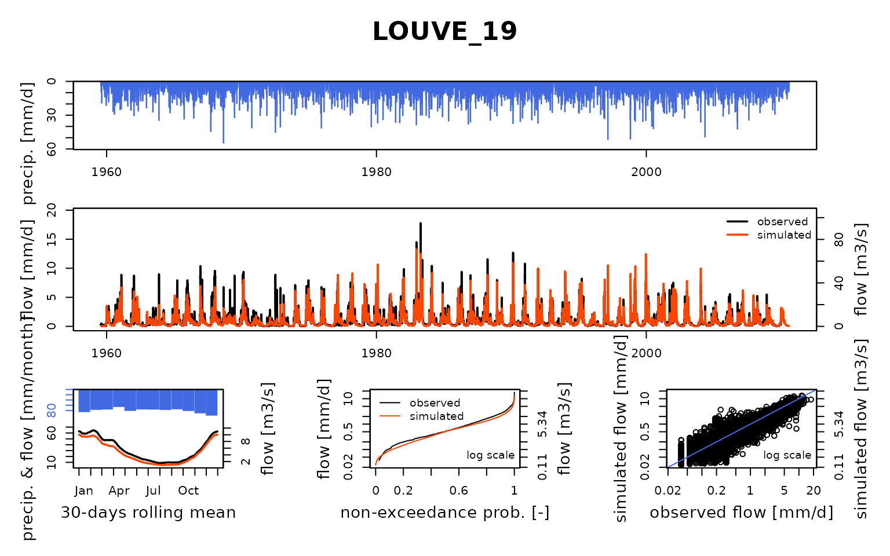
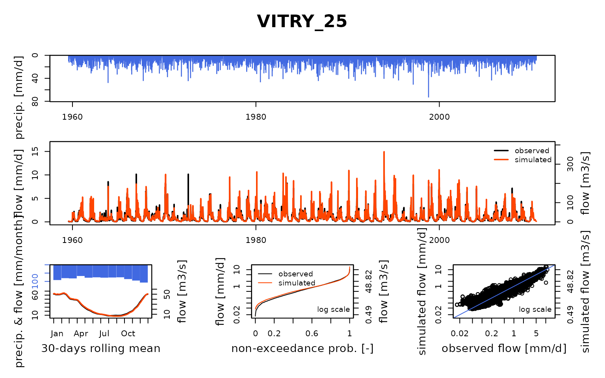
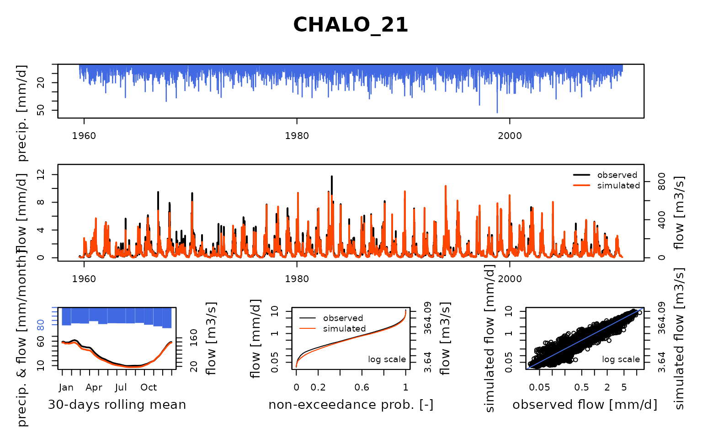
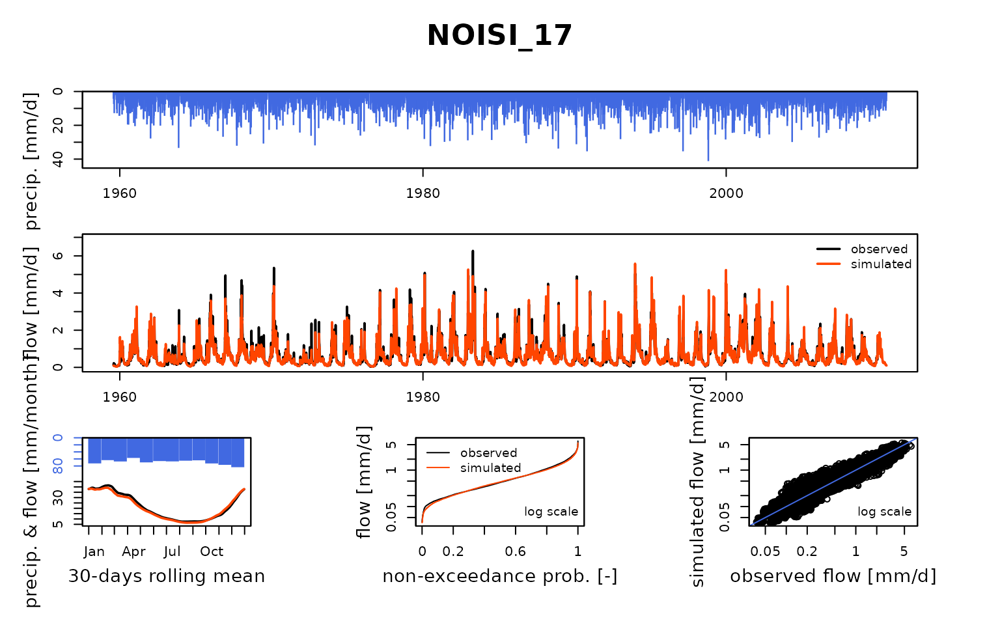

vignettes/seinebasin/V06_Naturalised_flow_simulation.Rmd
V06_Naturalised_flow_simulation.Rmd
library(airGRiwrm)
#> Loading required package: airGR
#>
#> Attaching package: 'airGRiwrm'
#> The following objects are masked from 'package:airGR':
#>
#> Calibration, CreateCalibOptions, CreateInputsCrit,
#> CreateInputsModel, CreateRunOptions, RunModel
library(seinebasin)This vignette aims at showing an example of flow naturalization by modeling (Terrier et al. 2020).
By using the model calibrated with influenced flows on the Marne River, it is now possible to model naturalized flows by dropping the connections to the Marne reservoir from the model. Please note that this is not the only way to remove the influence of reservoirs.
We first load the naturalized data and influenced flow calibrated
parameters (for GR4J, see
vignette("V05_Open-loop_influenced_flow_calibration", package = "airGRiwrm")):
# Input data for the model
load("_cache/V01.RData")
# Calibration in influenced flows
load("_cache/V05.RData")We must remove the lag parameter in the STDIZ_04 station
because there is no longer upstream node on it since we remove the only
upstream element for this station, a reservoir uptake:
Param6 <- Param5
Param6$STDIZ_04 <- Param6$STDIZ_04[-1]We remove extra items from a complete configuration to keep only the Marne system:
selectedNodes <- c("STDIZ_04", "LOUVE_19", "VITRY_25", "CHALO_21", "MONTR_18", "NOISI_17")
griwrm4 <- griwrm[griwrm$id %in% selectedNodes,]
griwrm4[griwrm4$id == "NOISI_17", c("down", "length")] = NA # Downstream station instead of PARIS_05
plot(griwrm4)
We can now generate the new GRiwrmInputsModel
object:
data(QNAT)
InputsModel4 <- CreateInputsModel(griwrm4,
DatesR,
Precip[, selectedNodes],
PotEvap[, selectedNodes])
#> CreateInputsModel.GRiwrm: Processing sub-basin STDIZ_04...
#> CreateInputsModel.GRiwrm: Processing sub-basin MONTR_18...
#> CreateInputsModel.GRiwrm: Processing sub-basin LOUVE_19...
#> CreateInputsModel.GRiwrm: Processing sub-basin VITRY_25...
#> CreateInputsModel.GRiwrm: Processing sub-basin CHALO_21...
#> CreateInputsModel.GRiwrm: Processing sub-basin NOISI_17...We first define the run period:
We define the (optional but recommended) warm up period as a one-year period before the run period:
IndPeriod_WarmUp <- seq(1, IndPeriod_Run[1] - 1)
RunOptions <- CreateRunOptions(
InputsModel4,
IndPeriod_WarmUp = IndPeriod_WarmUp,
IndPeriod_Run = IndPeriod_Run
)We keep the optimized parameter values obtained in
vignette("V05_Open-loop_influenced_flow_calibration", package = "airGRiwrm")
and run the model:
OutputsModels4 <- RunModel(
InputsModel4,
RunOptions = RunOptions,
Param = Param6
)
#> RunModel.GRiwrmInputsModel: Processing sub-basin STDIZ_04...
#> RunModel.GRiwrmInputsModel: Processing sub-basin MONTR_18...
#> RunModel.GRiwrmInputsModel: Processing sub-basin LOUVE_19...
#> RunModel.GRiwrmInputsModel: Processing sub-basin VITRY_25...
#> RunModel.GRiwrmInputsModel: Processing sub-basin CHALO_21...
#> RunModel.GRiwrmInputsModel: Processing sub-basin NOISI_17...We can finally compare the simulated naturalized flow with the ones given by Hydratec (2011):
plot(OutputsModels4, Qobs = Qnat[IndPeriod_Run,])